Coffee กาแฟ
- Aerocano — a customer favourite
- SNIM Bomb Coffee
- Iced Americano & Latte
- Drip coffee at the slow bar
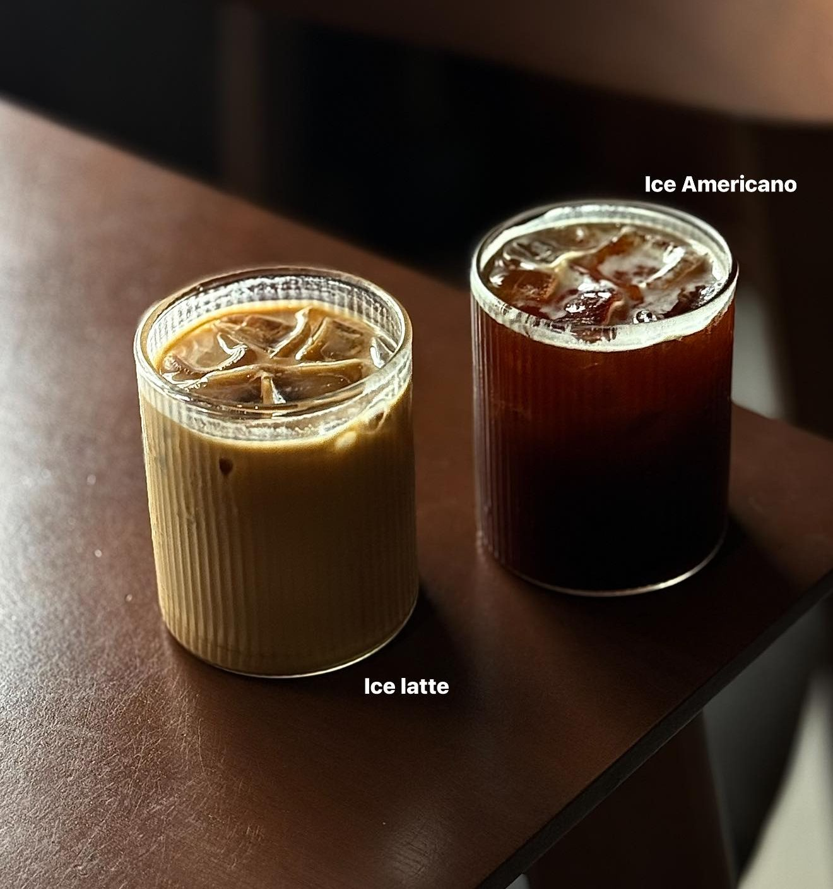
Specialty coffee · Khon Kaen
สนิม · ร้านกาแฟ specialty coffee · บขส.เก่า & เซ็นทรัล ขอนแก่น ชั้น G
A dark, cool little coffee bar at the old Khon Kaen bus terminal. Watch your coffee being made at the slow bar, pick a bean you haven't tried, and grab a Butter Tteok fresh from the oven.
About us · เกี่ยวกับเรา
SNIM started in Chum Phae and came to Khon Kaen city in 2023, opening our shop at the old bus terminal, opposite Ratchadanusorn Park. Steel, exposed concrete, warm low light and red chairs — a retro, minimal space with its own character.
We run both a speed bar for your morning grab-and-go and a slow bar where you can sit, sip and talk coffee with our baristas.
“กาแฟพิเศษ ไม่ใช่กาแฟที่ดื่มยาก แต่คือแก้วที่ดื่มได้ทุกวัน และสร้างความสุขให้คุณในทุกเช้า”
Specialty coffee isn't hard to drink — it's the cup you can enjoy every day.
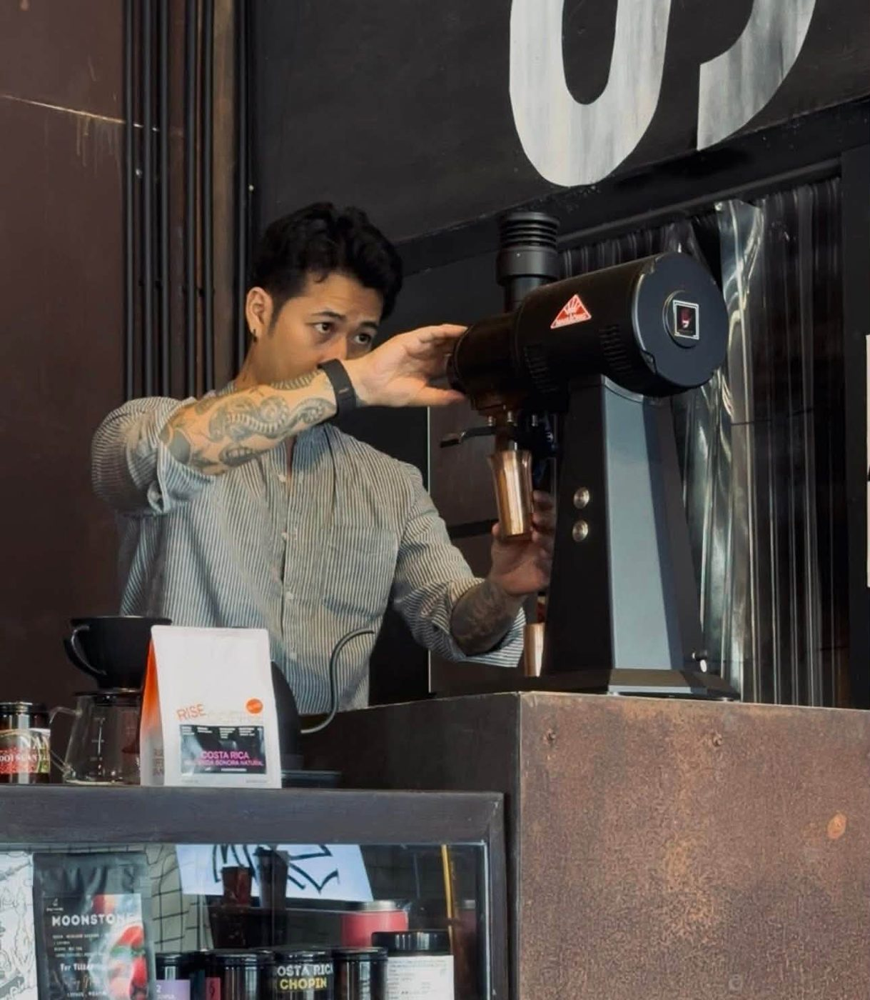
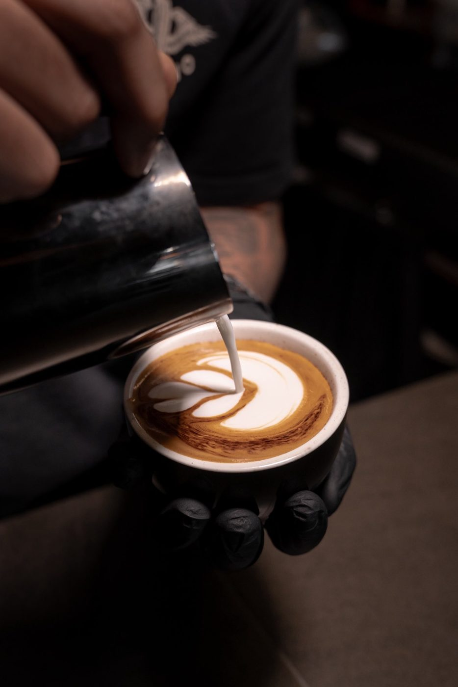
Coffee beans · เมล็ดกาแฟ
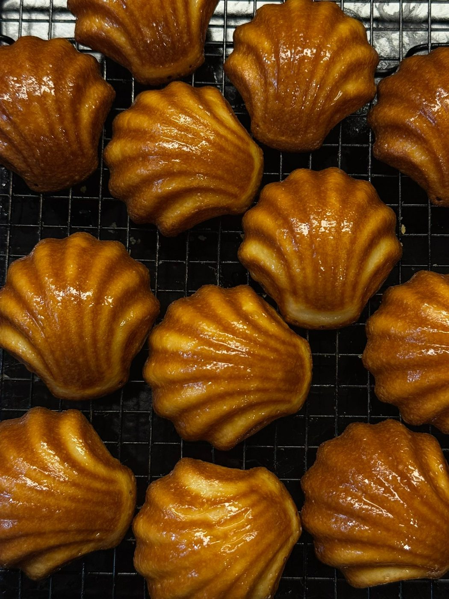
Fresh every morning
Crisp on the outside, chewy and mochi-like inside, and not too sweet — the perfect partner for your coffee. Eat in, take away, or order through GrabFood.
SNIM Member · สะสมแต้ม
Scan the QR at the counter to sign up yourself — it only takes a few details. Every ฿50 earns 1 point to trade for discounts, and you can collect at every SNIM branch.
What guests say
“Really great coffee, prepared by really nice and capable staff.”— Google review
“ร้านตกแต่งสีส้ม ดำ สีสนิม ให้ฟีลเท่ๆ เหมาะกับนั่งคุย ราคาน้ำไม่แรงมาก ส่วนตัวชอบชาไทย”— Google review
“Thai tea was delicious. Aircon works perfectly and they play cool music.”— Google review
Gallery
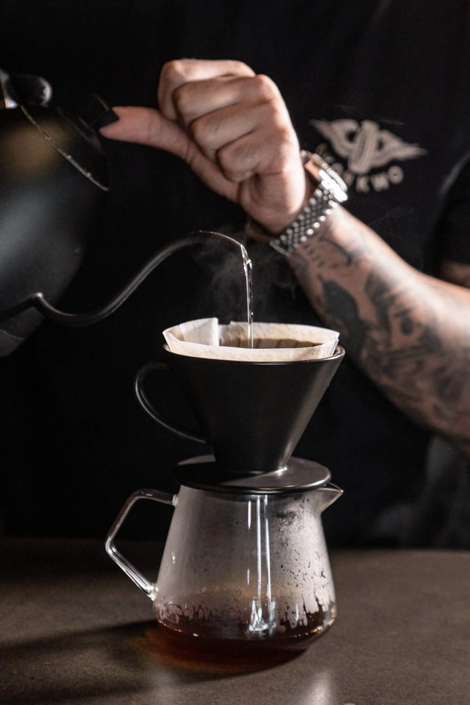
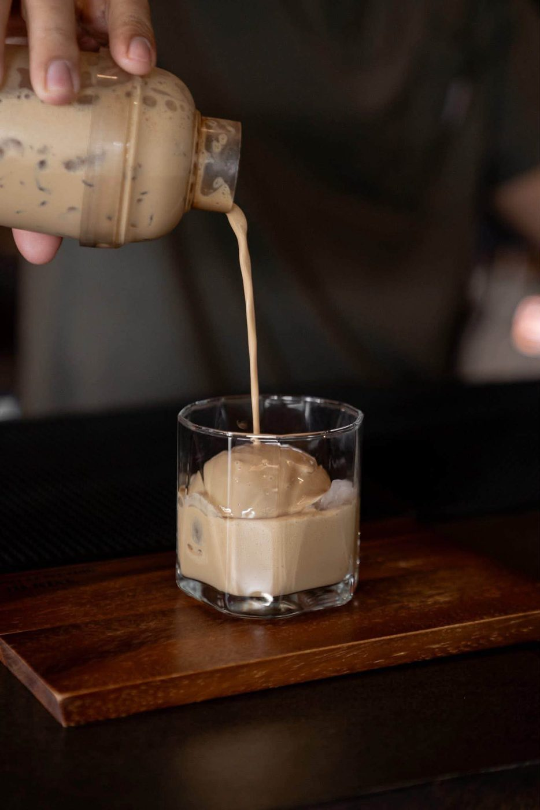
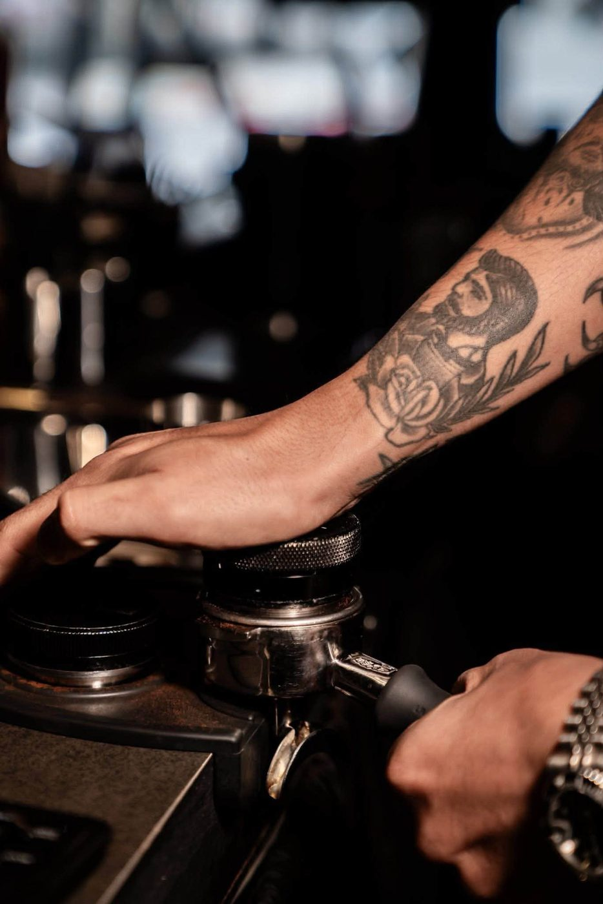
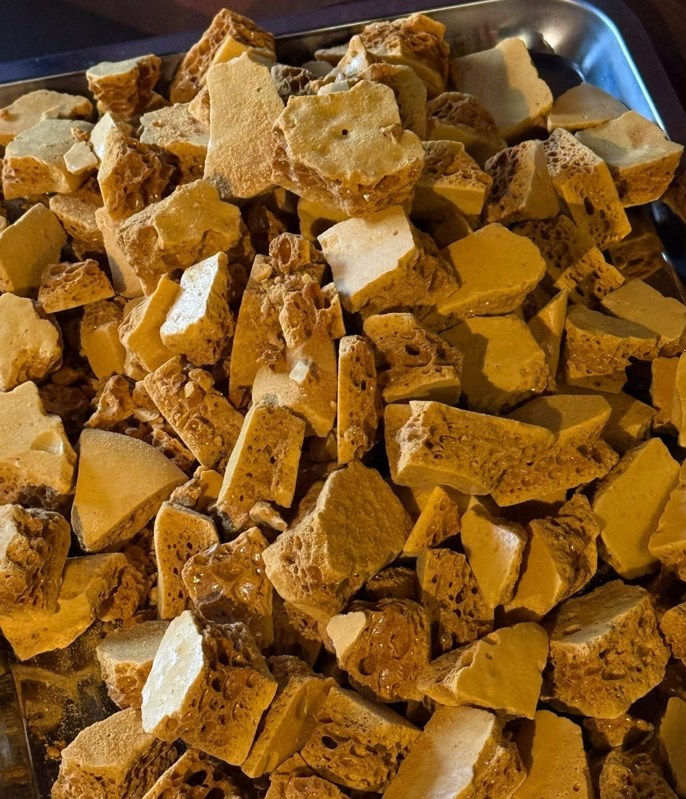
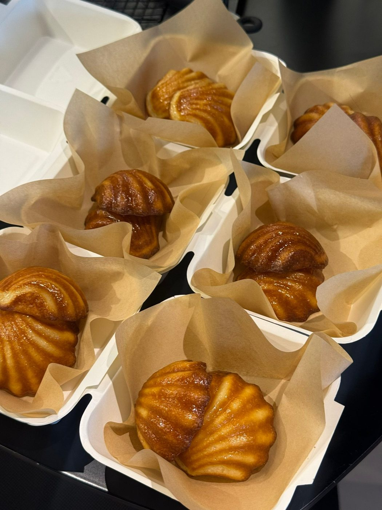
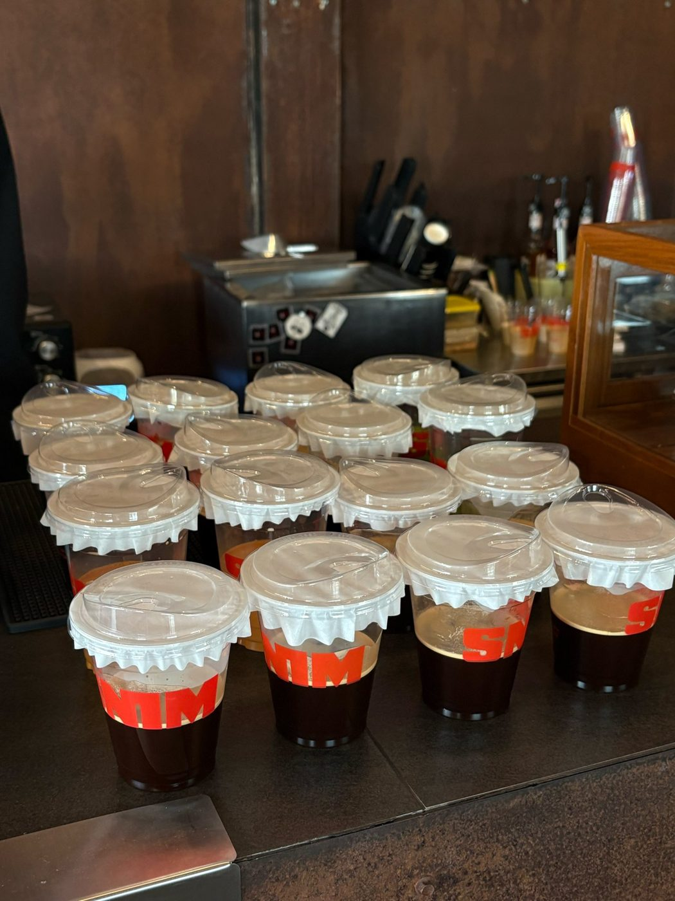
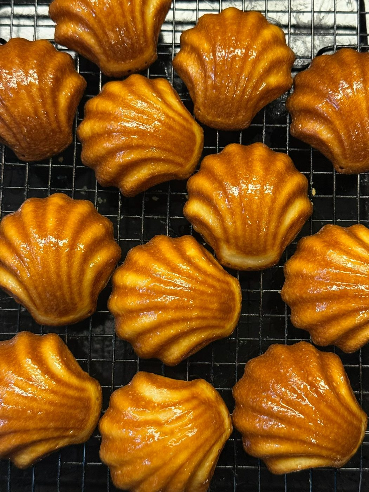
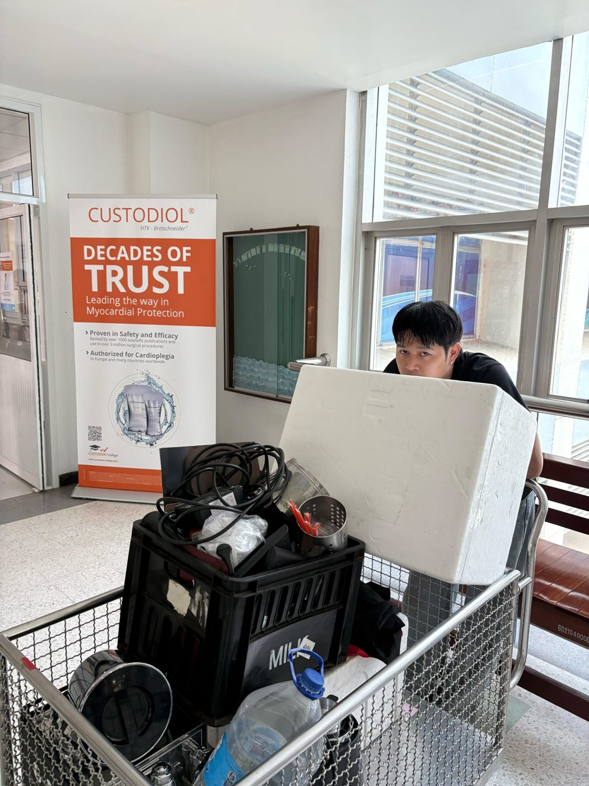
Branches · สาขา
Na Mueang Rd, opposite Ratchadanusorn Park
Mon–Fri 08:30–17:00 · Sat–Sun 09:00–17:00
Near McDonald's, G floor
Mon–Fri 10:30–21:00 · Sat–Sun 10:00–21:00
Also in Khon Kaen province: SNIM Coffee Chum Phae and SNIM Coffee Phu Pha Man. Coffee cart for events, big or small — message us on Facebook.
Visit · การเดินทาง
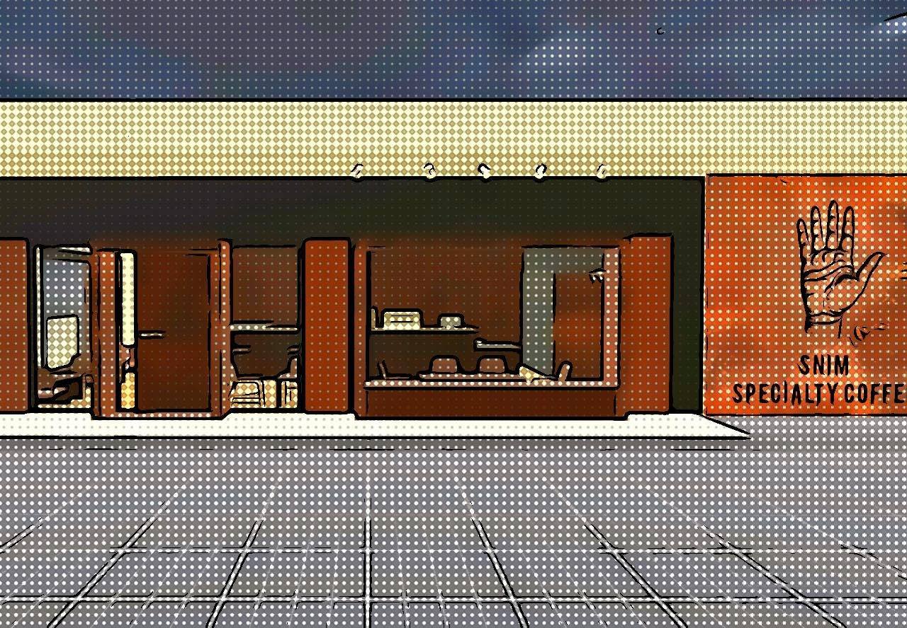